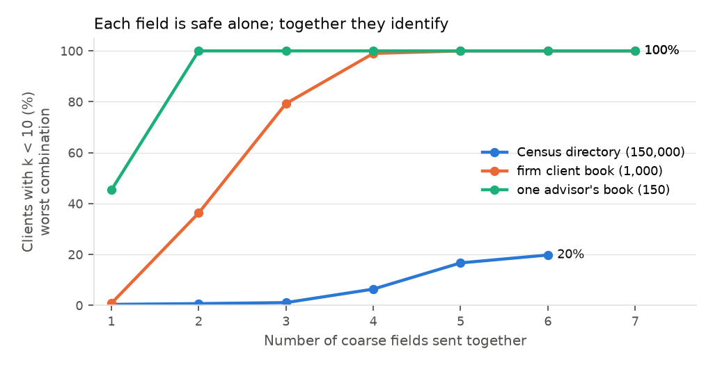
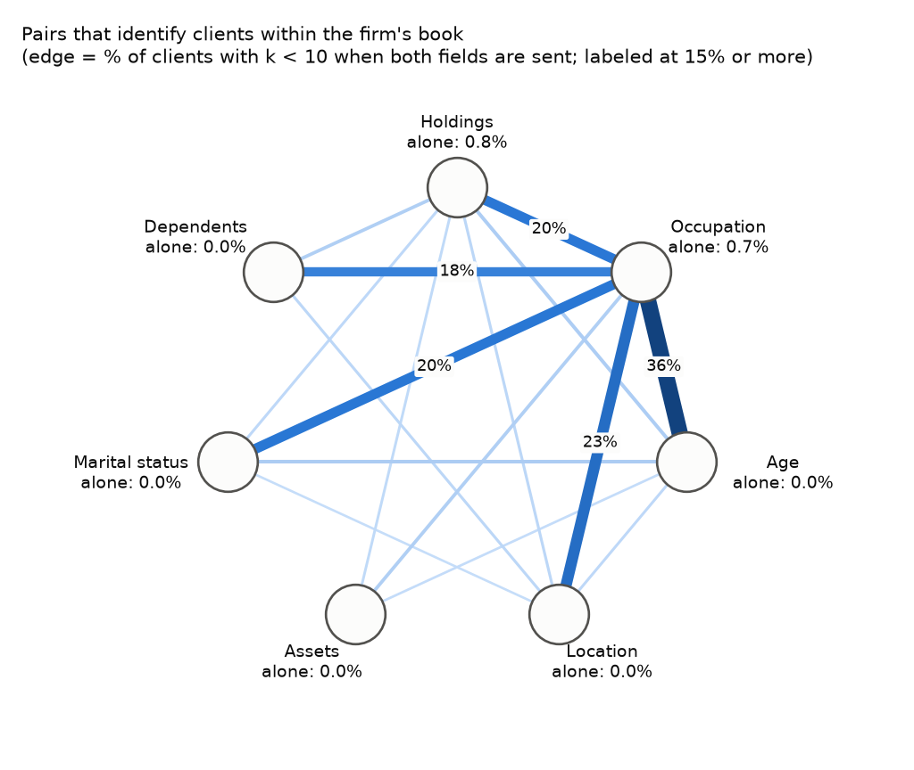
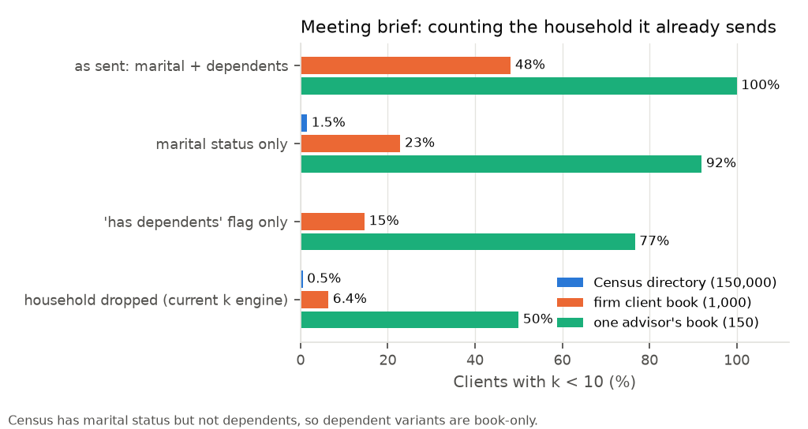

Protected environment
Prototype for p040: dehydrate client data, split identity from context, send the AI only what the task needs, rehydrate the answer, then test what still leaks.
The walkthrough shows the idea on a made-up client. This is what secure_context/ actually does. It runs in two phases: once when a client is loaded, then on every advisor request.
vault_id. SSN, account, routing number and DOB are encrypted with AES-256-GCM.ctx_id is created. The only link ctx_id → vault_id is stored inside the vault, so the context store holds no identity column.<TYPE_hmac6>, so tokens differ in every session. vault.py: session_notespolicy.py: TASKSprivacy.py: choose_policy, KEngine, ExposureLedger). If nothing qualifies, the request is refused and the model is never called.| Script | What it measures | Needs |
|---|---|---|
| eval/run_real.py | All main experiments on public data: identifiability per task and mode, exposure across 12 requests, attacks, PII detection, strategy extraction, transactions, latency | Nothing (sample data) or the full download |
| eval/run_combinations.py | Which field combinations identify clients; the household gap | Nothing |
| eval/run_counterfactual.py | Which fields each task's answer actually depends on | Simulator: nothing. Real model: Groq key |
| eval/llm_eval.py | Answer quality judged by an AI model; an AI attacker guessing hidden details | API key |
| eval/run_all.py | The same experiments on a fully synthetic 50,000-person world | Nothing |
| Point | What the code does today | Why it matters |
|---|---|---|
| Household not counted in k | The meeting brief sends marital status and dependents, but they are not a quasi-identifier in policy.FIELDS, so k and the adaptive search ignore them | Firm-book identifiability for meeting briefs goes from 6.4% to 48% once counted |
| Default detector is rules only | Regex + CRM dictionary. Presidio and GLiNER are optional | Rules catch known clients well but only 6% of identifiers in messy notes |
| Model is simulated by default | No saved results from a real model yet | Usefulness numbers come from a rule-based score |
| Ledger assumes every request is linkable | All requests about a client are merged | Conservative: real exposure is likely lower |
| k is measured against Census | Adaptive search uses the Census directory | Inside the firm's own book the same context identifies far more clients |
| No transcripts | Only short generated advisor notes are tokenized | Meeting transcripts were the Meeting 1 demo and the riskiest free text |
No LPL data. All five sources are public; names, SSNs, accounts and contact details are always generated. None of them are chats: they are tables (one row per person) plus short documents and request sentences.
| Dataset | What it is | Size | Used for |
|---|---|---|---|
| Census ACS PUMS 2023 | Real, anonymized people: age, state, local area, occupation, income, marital status (NY, NJ, CA, TX, FL, IL) | 978,284 | The attacker's directory for crowd size k |
| Fed Survey of Consumer Finances 2022 | Real households' wealth and investment mix | 22,975 | Gives each Census person realistic assets and holdings (statistical match) |
| Financial-Advisory-Clients | Synthetic advisory clients: age, income, marital status, dependents, portfolio, goal, horizon, risk, topics discussed | 5,000 | The client book (1,000 sampled) |
| Bitext Wealth Management | Single customer request sentences with 24 intent labels | 23,806 | Which tasks need which context; the request mix for repeated-request tests |
| Gretel synthetic PII finance | Fake financial documents with labelled PII spans | 2,891 | The PII detection benchmark (the only third-party benchmark) |
This is an experimental combination of sources, not a join of the same real people.
| Crowd | Who has this view |
|---|---|
| Census directory (978K) | An outsider who knows nothing about the person's financial firm |
| Firm client book (1,000) | Anyone who knows the person is an LPL client: a vendor, an employee, the AI provider |
| One advisor's book (150) | Anyone who knows which advisor the person uses, including the assistant serving that advisor. Here: a random 150 of the 1,000 |
Crowd size k = how many people match everything the AI saw. k < 10 counts as identifiable. Sources: eval/results_real/, eval/results_counterfactual/, docs/.
| Masking only | Task policy | Adaptive + ledger | |
|---|---|---|---|
| Clients unique after one request | 96.4% | 0% to 3.5% | 0% |
| Clients with k < 10 after 12 requests | n/a | 15.9% | 0% |
| Task utility after 12 requests (rule-based) | 1.00 | 1.00 | 0.99 |
| Detector (2,891 Gretel documents) | Identifiers caught | Precision | Docs with a leak |
|---|---|---|---|
| Regex | 11% | 46% | 75% |
| Presidio | 43% | 38% | 68% |
| Regex + Presidio | 46% | 37% | 67% |
| GLiNER / Groq LLM detector | pending: needs an API key | ||
Addresses are caught only 9% of the time. On our own notes the CRM dictionary catches 100% of identifiers in expected formats but 6% in messy notes (56% with Presidio).
| Coarse fields combined (worst case) | Census | Firm book | Advisor book |
|---|---|---|---|
| 1 | 0.4% | 0.8% | 45% |
| 2 | 0.7% | 36% | 100% |
| 3 | 1.1% | 79% | 100% |
| All | 20% | 100% | 100% |
| Riskiest pairs in the firm book | k < 10 |
|---|---|
| Age band + occupation group | 36% |
| Region + occupation group | 23% |
| Occupation + marital status | 20% |
| Occupation + holdings mix | 20% |


| Meeting brief: household sent as | Census | Firm book | Advisor book |
|---|---|---|---|
| Not counted (today's k engine) | 0.5% | 6.4% | 50% |
| As sent: marital + dependents | n/a | 48% | 100% |
| Marital status only | 1.5% | 23% | 92% |
| "Has dependents" flag only | n/a | 15% | 77% |

The adaptive policy's "0%" relies on the same engine, so it has the same blind spot. Proposed fix: make household a quasi-identifier with a coarser "has dependents" level, then rerun.
Ask for the same task twice, changing one field (coarser, swapped or dropped), and see whether the answer changes. If it doesn't, the field isn't needed.
| Part | Status |
|---|---|
| Split storage, HMAC tokens, rehydration | Built and tested |
| Task policies, adaptive search, exposure ledger | Built Household not counted |
| PII detection | Rules built Model detectors not evaluated |
| Privacy evaluation on public data | Done |
| Combination risk and counterfactual needs | Done Counterfactual on simulator only |
| Real-model answer quality | Not run |
| Meeting transcripts | No data yet |